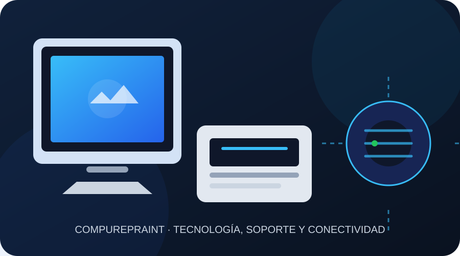

🖥️
Computadoras y laptops
Diagnóstico, mantenimiento, reparación, actualización y optimización.
Conocer másSERVICIO TÉCNICO PROFESIONAL
Reparamos, instalamos y optimizamos equipos informáticos, redes y sistemas de seguridad con atención personalizada.

NUESTROS SERVICIOS
Diagnóstico, mantenimiento, reparación, actualización y optimización.
Conocer másMantenimiento, configuración y solución de fallas para equipos de impresión.
Conocer másInstalación de puntos LAN, cableado estructurado y configuración de red.
Conocer másCámaras, alarmas y soluciones de control para hogares y negocios.
Conocer másWindows, Linux, software, limpieza física y asistencia remota.
Conocer másSitios modernos, responsivos y adaptados a las necesidades de tu negocio.
Conocer más¿POR QUÉ ELEGIRNOS?
Trabajamos con diagnóstico claro, atención personalizada y soluciones pensadas para prolongar la vida útil de tus equipos.
Atención organizada para reducir tiempos de espera.
Seguimiento posterior para mayor tranquilidad.
Te explicamos el diagnóstico y las alternativas disponibles.
Servicio para hogares, oficinas y pequeños negocios.
IMAGEN ADAPTATIVA
Esta sección utiliza <picture> y srcset para demostrar imágenes adaptativas según el dispositivo.